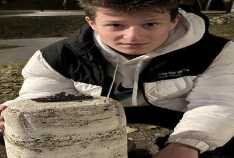
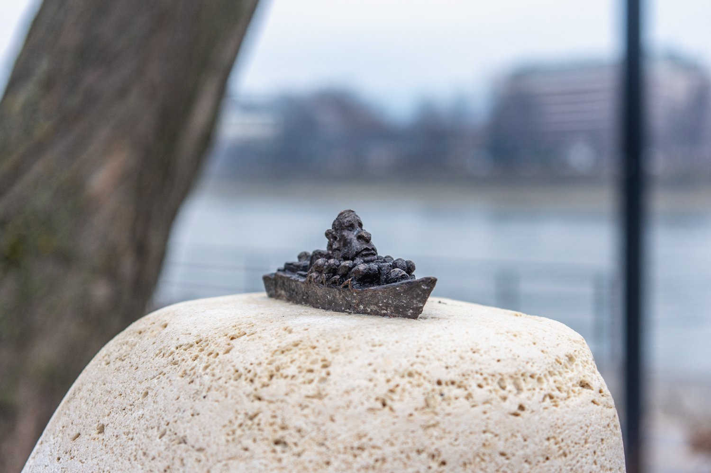
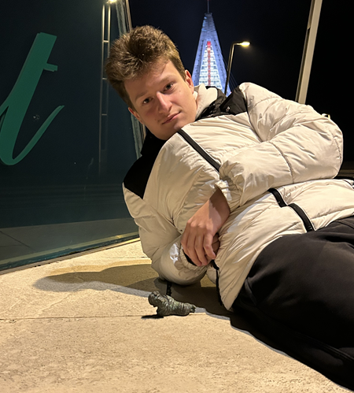
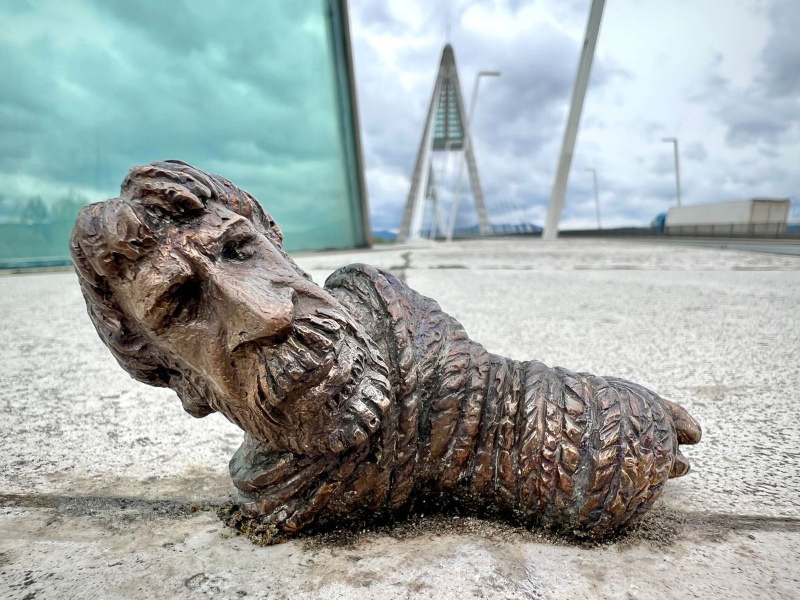

Kolodko Mihály „Orosz hadihajó…” üzenetet megidéző miniszobra a kortárs történelem egyik legismertebb mondatára reagál. A kifejezés a 2022-es orosz–ukrán háború elején vált ismertté, amikor egy ukrán határőr ezzel a mondattal válaszolt a megadásra felszólító orosz üzenetre. A rövid, nyers válasz hamar az ellenállás, bátorság és szabadság jelképe lett.
Kolodko miniszobra ezt az üzenetet kézzelfogható formába sűríti. Az alkotás nem a háború látványos eszközeit állítja középpontba, hanem az emberi kiállást és a szavak erejét. A kis méretű szobor arra kényszeríti a szemlélőt, hogy közel lépjen, elolvassa és értelmezze, így személyesen kapcsolódjon a mögöttes történethez. A miniszobor ironikus, mégis súlyos hangvételű: egyszerre hordozza Kolodko jellegzetes humorát és a háborús valóság tragikumát.
A szobor jelentősége abban áll, hogy a köztéri művészet eszközeivel reflektál egy aktuális, fájdalmas történelmi eseményre. Nem politikai jelszóként, hanem emlékeztetőként működik: arra figyelmeztet, hogy a szabadságért sokszor hétköznapi emberek vállalnak rendkívüli bátorságot. Az „Orosz hadihajó…” miniszobor így a civil ellenállás, szolidaritás és emlékezés csendes, mégis erős szimbóluma a városi térben.


A Kolodko Mihály által készített Chuck Norris miniszobor jelentősége abban rejlik, hogy a művész egy ikonikus popkulturális figurát emel át a kortárs városi művészetbe. A bronz miniszobor egyszerre játékos, ironikus és felfedezésre ösztönző elem a városi térben.
A szobor a humor, az irónia és a popkulturális utalások kombinációjával a járókelők figyelmét vonzza, interaktív élményt teremtve. Így a karakter hősies, legyőzhetetlen mítoszát új kontekstusban jeleníti meg.
Kolodko szobrainak védjegye, hogy váratlan, nyilvános helyeken bukkannak fel, így a Chuck Norris miniszobor is az utcai gerillaszobrászat részeként egyfajta „utcai galériát” hoz létre. Ez a megoldás a városi tér humoros, ironikus és kreatív újraértelmezését teszi lehetővé.
A mű egyszerre tiszteletadás és parafrázis, amely a popkultúra ikonikus figuráit a kortárs művészeti nyelv és a városi élmény részeként értelmezi újra. A szobor így a járókelők számára felfedezésre, játékra és reflexióra inspiráló jelenlétté válik.
A Chuck Norris miniszobor története a budapesti városi térben kezdődik, ahol váratlan helyen jelent meg, felfedezésre várva. Inspirációját Chuck Norris filmes és televíziós karrierjéből merítette, aki az 1970–1990-es években vált ismertté a harcművészetek és az akciófilmek világában.
Különösen a Walker, a texasi kopó című sorozat révén testesítette meg a legyőzhetetlen, hősies karaktert. Kolodko reinterpretációjában a figurát bronzból alkotta meg, a városi térbe integrálva, ahol a ikonikus mozdulatok és a legendás személyiség közvetlenül érzékelhetővé válik.
A miniszobor a művész utcai gerillaszobrászati hagyományait követi, mely szerint az alkotások váratlanul bukkannak fel. Így a szobor története egyben a városi felfedezés és a popkulturális hős mítoszának újraértelmezését is magában foglalja. A nyilvános tér, a figura ikonográfiája és a kortárs budapesti utcai művészet összekapcsolásával válik teljessé.

